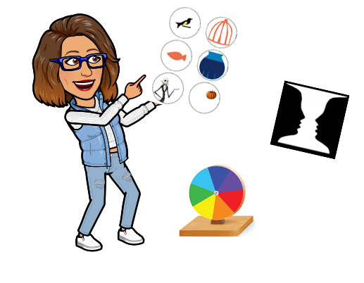

1- El Reto
Con las actividades que vamos a realizar en este taller vamos a aprender sobre la ciencia y la física de la luz. Nos va a permitir experimentar y descubrir el mundo que nos rodea de manera creativa y emocionante.
Pretendo que toméis conciencia del sentido de la vista y su relación con la luz; que seáis conscientes de la forma de ver las cosas en vuestro día a día. Se pretende despertar la curiosidad y la reflexión sobre lo que se percibe y cómo se percibe gracias a la luz.
